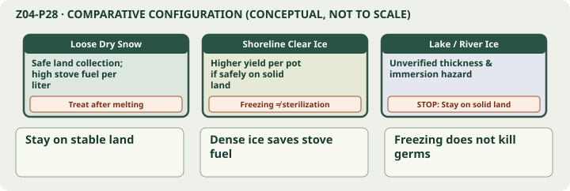

Z04-P28 · Water · New manuscript
Decide when to melt clear ice versus loose snow
Weigh fuel savings of solid ice against ice-access drowning hazards and mandatory microbial treatment.
When it applies · Winter camp where loose snow and safe shoreline or icicle ice fragments are available without stepping onto frozen water bodies.
Equipment · Safe land-based access, heat-safe metal pot, outdoor stove and validated microbial treatment.

Actions
- Recognize that dense, bubble-free ice yields far more liquid water per pot volume and requires less stove fuel than fluffy dry snow.[W25, W26, ED]
- Collect ice only from stable land—such as safe broken shoreline pieces or clean ground-accessible blocks—never step onto uncertain lake or river ice to chop water holes.[E12, ED]
- Treat melted ice as microbiologically raw water; freezing slows bacteria and preserves cysts rather than sterilizing the source.[W09, W19, W02]
Failure recognition · Walking onto thin river ice to reach open water or drinking melted lake ice under the myth that freezing kills germs.[E12, W09, W19]
Verify · Confirm collection occurred strictly from stable land and that meltwater undergoes boiling or rated microbial treatment before drinking.[E12, W02, ED]
Stop or change course · If reaching ice requires stepping onto unverified lake or stream ice or beneath hanging roof icicles, stay on safe land and melt clean snow instead.[E12, E13, ED]
Evidence and editorial notes
- E12 · Minnesota DNR · Ice Safety (current web edition)
- Section: Ice Safety > basic precautions · Conditions: Minnesota ice edges and travel routes
Support: No ice is universally safe. Strength can differ over short distances; appearance or tracks alone cannot establish a safe crossing.
Limitations: Currents, springs, snow insulation, and freeze-thaw cycles weaken ice invisibly. · Conflicting evidence: None; mandates shore-bound detour for foundational walking parties.
Editorial note: Maintains strict separation from specialized B013 ice chapters. · Specialist reviewer: Ice safety and search and rescue
Primary source · checked 2026-11-24 - E13 · USDA Forest Service · Hazard Tree Safety (agency PDF)
- Section: What You Can Do to Reduce Risk · Conditions: Forest campsites and stops
Support: Look for dead trees and falling material. Stay away from hazardous trees and move away when winds make the site unsafe.
Limitations: Internal decay and root rot can cause live-looking trees to fail in saturated soils or high wind. · Conflicting evidence: Does not specify a universal exclusion radius; tree height and slope govern fall reach.
Editorial note: Prevents false precision on fall-zone distance while requiring overhead screening. · Specialist reviewer: Land management and arboriculture safety
Primary source · checked 2026-11-24 - W02 · CDC · How to Make Water Safe in an Emergency (2024-09-19)
- Section: Boil > Steps for boiling water · Conditions: Microbiologically suspect water with acceptable chemical source; portable heat and safe vessel
Support: Clarify cloudy water first. Rolling boil for one minute; above 6,500 feet for three minutes. Cool and cover in sanitized containers.
Limitations: Does not remove dissolved metals, nitrates, fuel, or cyanotoxins. · Conflicting evidence: Older Track B B009 omitted the 6,500 ft threshold; CDC threshold governs.
Editorial note: Require explicit timer verification after rolling boil starts. · Specialist reviewer: Drinking-water safety and public health
Primary source · checked 2026-11-24 - W09 · CDC · Water Treatment Options When Hiking, Camping, or Traveling (current web edition)
- Section: Overview and water treatment methods · Conditions: Hiking or camping where no safe source is confirmed
Support: Even clear water can contain germs. Assess the supply and carry safe water or an appropriate treatment method.
Limitations: Visual clarity never detects microbes or dissolved chemical contaminants. · Conflicting evidence: None across CDC/NPS/EPA sources.
Editorial note: Reinforces clarity-is-not-potability invariant across all Z04 cards. · Specialist reviewer: Drinking-water safety and public health
Primary source · checked 2026-11-24 - W19 · CDC · Preventing Giardia Infection (current web edition)
- Section: Drinking water and preventing infection while hiking or camping · Conditions: Untreated surface water in wilderness and rural watersheds
Support: Use boiling or a parasite-rated filter. Chemical treatment effectiveness depends on product, target organism, temperature and contact time.
Limitations: Pore size alone does not protect if cartridge seals leak or freeze-crack. · Conflicting evidence: None; underscores why chemical-only treatment has parasite limits.
Editorial note: Clarifies why filter micron/NSF ratings matter for protozoa. · Specialist reviewer: Drinking-water microbiology and public health
Primary source · checked 2026-11-24 - W25 · USGS · Snowmelt Runoff and the Water Cycle (current web edition)
- Section: Snowmelt Runoff and the Water Cycle · Conditions: Late-winter and spring snowpack runoff and melting snow
Support: Snowpack accumulates airborne deposition and surface debris over winter and releases concentrated meltwater runoff during thaws, altering stream turbidity and flow rapidly.
Limitations: Clean-looking snow can still contain microbial or surface contaminants from deposition or wildlife. · Conflicting evidence: None; reinforces snow source screening and seasonal runoff shifts.
Editorial note: Supports seasonal snow/ice water cards and meltwater screening. · Specialist reviewer: Hydrology and cold-weather operations
Primary source · checked 2026-11-24 - W26 · NPS · Two Ways to Purify Water (current web edition)
- Section: Two Ways to Purify Water · Conditions: Backcountry water treatment planning in National Parks
Support: Boiling and chemical/filtration methods each have fuel, time, weight, and organism-coverage trade-offs; match the primary method and backup to route conditions and follow directions.
Limitations: Does not resolve chemical spills or algal toxins. · Conflicting evidence: Aligns with CDC-T altitude and parasite limits.
Editorial note: Supports primary-plus-backup water treatment selection in Z04. · Specialist reviewer: Backcountry water safety
Primary source · checked 2026-11-24
Source lineage · USGS snowmelt and MN DNR ice safety; new manuscript · Classification · New manuscript.